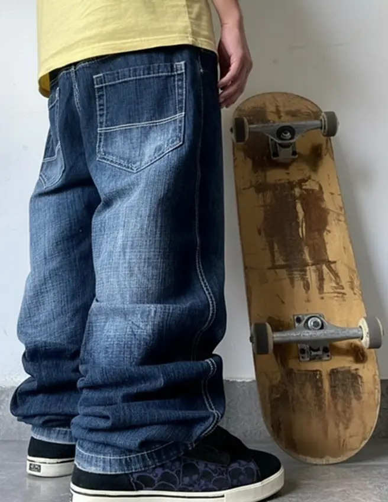
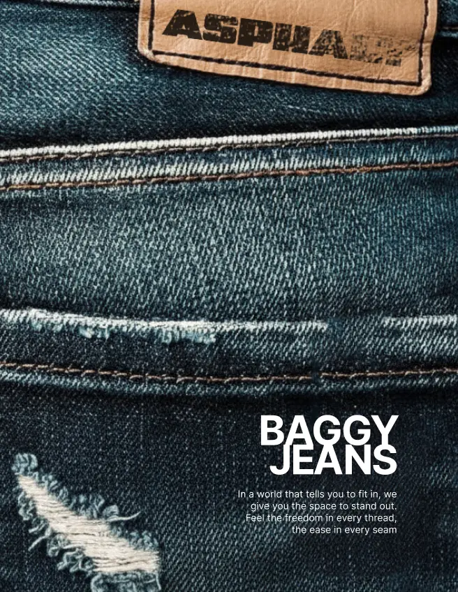
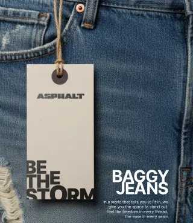
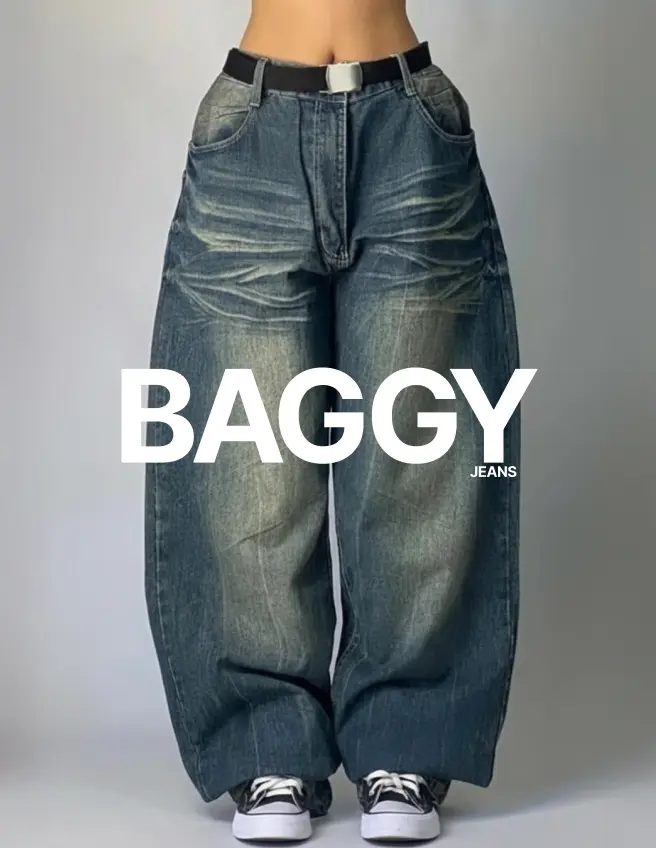
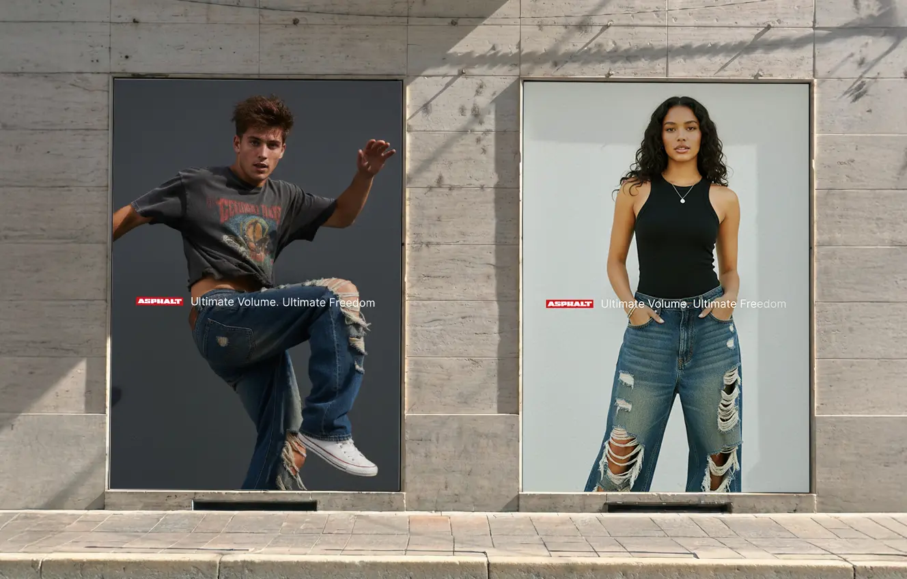

Asphalt
Asphalt is a denim brand inspired by the raw energy of skate culture and the aesthetics of the urban landscape. The brand focuses on oversized denim: wide silhouettes, heavy distressing, bold rips – all reflecting the freedom of movement and the independent spirit of today’s rider. At the core of Asphalt’s philosophy is the honesty of the street. The material, texture, and fit are crafted not for trends, but for the person who lives in constant motion – from skate spot to city, from rhythm to rhythm. The brand’s jeans are created as an everyday tool of self-expression: comfortable, durable, and visually strong.





Asphalt Logo
The Asphalt logo is a visual metaphor for the intersection of the harsh urban environment and tactile comfort. The brutal, weighty font refers to the texture of asphalt and the strength of denim, and carefully adjusted curves soften the perception, adding a sense of freedom of movement inherent in a baggy silhouette.